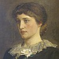

 |
 |
 |
 |
 |
"Tchi difféthence tch'i' y'a entre un vîsage et eune fache?" jé d'mandis à Papa eune séthée au pid du feu quand j'tais mousse. "Dans la forge à matîn Mess Le Ruez, Bram, té dît qu' san Bréton avait chèrchi chicangne à Albèrt Tâton et qu'Albèrt li'avait mîns la fache en margalot Mess Le Cornu, Darrique, nouos racontit l'histouaithe pus tard, mais i' dît qué l'Bréton avait l'vîsage dêfidguthé."
"La fache et l'vîsage," Papa m'dît, "ch'est la même chose. J'disons pûtôt la fache à ch't heu, mais l's anciens disaient pûtôt l'vîsage. Nouot' langue Jèrriaise est riche en expressions, et y'a souvent plusieurs mots tchi veulent dithe la même chose. Par exempl'ye, les mots margalot et dêfidguthé veulent dithe qué la fache au pouôrre dgiâtre d'Bréton, tchi n'savait probabliément qu'Tâton est batilieux d'sa sorte, 'tait endommagie. Né v'là trais mots margalot, dêfidguther et endommagement - qu'nou peut faithe sèrvi pour dithe qu'oulle avait ieu du ma".
"I' d'vait aver ieu bouanne raîson pour sé battre, Albèrt Tâton," j'dis à Papa. "Il est auve nous à l'êcole, et jé n'lé janmais veu chèrchi chicangne. L's aut' garçons l'laîssent trantchil'ye viyant tchi'i' savent tch'il est court dé pé. L'aut' sé, l'bouanhomme Émile Doublard, tch'en avait deux d'goûts à bord, lî chèrchi chicangne lé tou d'la fouée pour Guy Fawkes. 'Laîssiz mé trantchil'ye', Albert lî dît.
'J'n'ai pon rein contre vous et jé n'veurs pon vouos faithe dé ma à vouotr' âge.' Mais Mess Doublard n'arrêtait pon d'l'embêter et lî dithe tch'i' pouvait l'battre. Finnalement, quand i' vit qu' Albèrt né prannait pon d'avis d'li, l'bouanhomme Émile lî donnit un co d'poing sus l'êpaule. Comme dé raîson, Albèrt sé touannit d'bord et li'en donnit iun tchi l'tchulbutit. Albèrt li-aîdgit à sé r'léver et lî dît d's'en aller siez li quandi tchi pûsse gabather."
"V'là tchi montre qué v'là tchi n'paie pon d'chèrchi chicangne", sé fît Papa. "Mais pour èrvénîn au sujet d'la fache. Y'a un tas d'crianches et d'ditons entouôrre. Quand eune janne fille est douoche dé caractéthe nou dit : 'Oulle a eune fache dé chucre et dg'ieau, chette-là', ou 'Oulle a eune belle fache, eune fache êpannie'. Mais quand eune pèrsonne fait laie minne, nou dit: 'Oulle a eune fache longue comme lé bras'. D'aut's dithont: 'Oulle a eune fache longue comme eune gambe dé d'vant'.
"Pour un homme tch'est mârri ou d'mauvaise heunmeu, nou dit 'Il a eune fache dé tigre et un nez d'pièrre à feu', ou 'Il a eune fache dé pliaque d'arme'. Quand eune fille est riche et d'bouanne fanmil'ye et tch'i' n'y'a pon d'jannes hommes dé san rang dans l'vaîsinné, et qu' les cheins tchi n'y sont pon, d'san rang, n'peuvent pon en appréchi, nou dit: 'Oulle a eune fache dé sainte nitouche'. Quand eune pèrsonne vouos fait bouanne minne fache à fache. mais qu'ou vouos dêchithe driéthe vouot' dos, nou dit qu' 'Ch'est eune doubl'ye fache'.
"Quand nou va visiter tchitch'uns et tch'i' n'y'a pèrsonne à la maison quand nou y'arrive, nou dit: 'J'ai 'té pour les vaie, mais j'ai trouvé fache dé bouais'. Quand eune femme est laie comme lé péché du Dînmanche, nou dit: 'Oulle a eune fache tchi sèrt d'èrmiède à l'amour'. D'eune pèrsonne tch'a la fache pliate, nou dit: 'Oulle a eune fache d'hôlouoge.
"Deux pèrsonnes, bein pôsés et raîsonnabl'ye, peuvent distchuter un problème fache à fache et lé r'soudre amicalement."
"En pâlant d'faches dé bouais," j'dis à Papa. "Papa Giffard en faîsait, li, en bouais. J'avons la tête dé la Reine Alexandra, tch'i' stchulptit, dans l'gardîn et oulle est si bein faite qué nou dithait qu'oulle est en vie. Et quand j'allis à St Pièrre vaie l'dgiâbl'ye tch'il avait stchulpté pour mett' dans L'Creux du Vis, la fache pathaîssait quâsi en vie étout."
"Vaithe, man garçon". i' m'dît. "tan Papa Giffard 'tait un homme absolûment doué. Ch'est danmage qué tu n'l'as pon connu. car tu n'avais qu' un an quand i' mouothit en 1892. Quand j'éthons la chance, j't'emmèn'nait ès Caves dé Champion à La Crouaix d'Bouais. Là, tu vèrras un tas d'ses stchulptuthes. Et y'en a un tas dans l'bel dé la Prison en Ville. Tch'est tchi sait, j'pouôrrais p't-êt' aver pèrmission dé t'montrer ches'là étout. I' faudra qu' j'en pâle au Connêtabl'ye d'Auvergne."
 |
 |
 |
Viyiz étout: